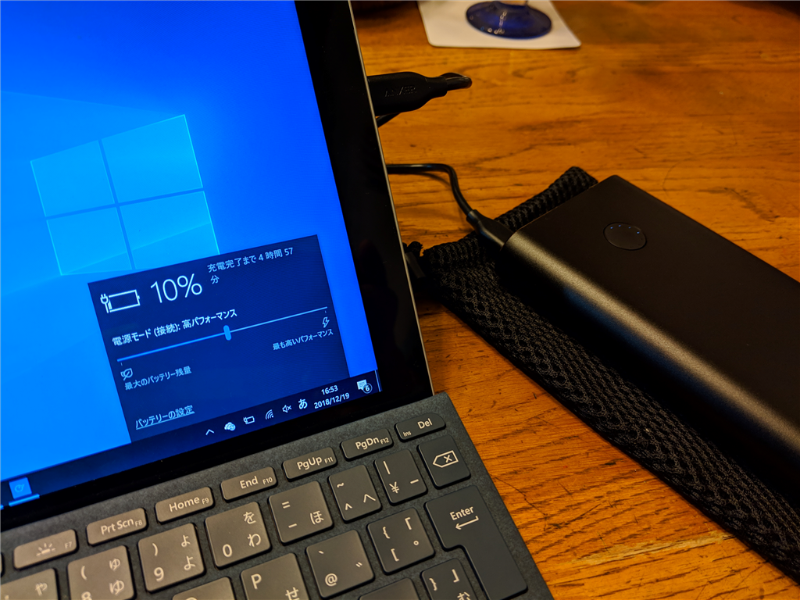

9月18日：Surface Go 用のモバイルバッテリー（Anker PowerCore+ 26800 PD）を買った
公開日：

この前のサイバーマンデーセールでは USB Power Delivery（PD）対応のバッテリーがあれば Surface Go 向けに確保しようと待ち構えていたのですが、残念ながら Nintendo Switch 向けのもの（Anker PowerCore 20100 Nintendo Switch Edition）しか出ていなかったようで。そのときはあんまりよく調べていなかったのだけど、Surface Go に使うには少し心もとないのかな……と思い、なんとなくパス。
すると、セール後に今度は Anker PowerCore+ 26800 PD が2割引きに。
【USB-Cポート搭載/USB-C急速充電器付属】")
Anker PowerCore+ 26800 PD (Power Delivery対応 26800mAh モバイルバッテリー)【USB-Cポート搭載/USB-C急速充電器付属】
- 出版社/メーカー: Anker
- メディア: エレクトロニクス
- この商品を含むブログを見る
定価は倍になりますが、Anker PowerCore 20100 よりもいいかなと思い確保しました。買ってからになったけど、スペックを比較してみる。
| 型番 | Anker PowerCore 20100 | PowerCore+ 26800 PD |
| 容量 | 20100ｍAh | 26800ｍAh |
| USB-C 出力 | 24W | 30W |
| 5V=3A, 9V=2.6A, 15V=1.6A | 5V = 3A, 9V = 3A, 15V = 2A, 20V = 1.5A | |
| USB-A 出力 | 5V = 2A | 5V = 3A |
| 定価（税込み） | 4,990円 | 9,999円（7,999円で購入） |
Surface Go の充電器は 15V × 1.6A ＝ 24W だそうなので、Anker PowerCore 20100 でも大丈夫だったみたい？ しまったな……まぁ、いいや。まぁ、余裕があるに越したことはあるまい（震え声
ちなみに Surface Book 2 の充電器は dGPU なしの場合で 15V × 2.58A = 39W、dGPU 付きの場合で 15V x 6.33A = 95W らしい。
標準ベースを使った NVIDIA GPU 非搭載 Surface Book の場合、33 ワットで充電することをお勧めします。NVIDIA GPU 搭載 Surface Book の場合は、93 ワットをお勧めします。
Surface Book 2 で使えるかなと期待したのだけど、ちょっと足りないかな？
内容物は
- Anker PowerCore+ 26800（本体）
- Anker PowerPort Speed 1 PD30（PD 対応 USB-C 充電器）
- Micro USBケーブル
- USB-C＆USB-Cケーブル
- トラベルポーチ
みたいな感じ。PD 対応の充電器がついてくるのはいいな。これを使えば 4.5 時間でバッテリーを満充電できるとの由。
本体はずっしりと重く、あまり持ち運びたくはないかな（約580g）。持ち出すのは泊りがけの旅行の時がメインになるだろう。USB-C 以外にも USB ポートが2つあるので、iPhone 用のケーブルと Pixel 3 用のケーブルがあれば用は足せそう。
バッテリー残量を表す LED は電源ボタンの上に丸く配置されているが、パッと見、残量が分かりにくい……直線状に並んでる方が好みだけど、ボタンと一体化させたかったんだろうな。まぁ、そのうち慣れるだろう。
トラベルポーチはメッシュのふわふわしたやつで、必要十分って感じ。でも、ハードポーチが欲しいかなって思った。これは今度 Amazon でいい感じのやつを探す。
初期不良があったら嫌なので“新しい Macbook（古い方）”で充電を試してみたけど、ちゃんと動いた。Surface Go でも試してみたが、1時間で 10％ → 40％ まで充電された。早くはないけど、遅くもないかな？ PD 対応バッテリーって初めてだからよくわからん。ハードウェアはちんぷんかんぷんなので、詳しい人に教えてほしい（